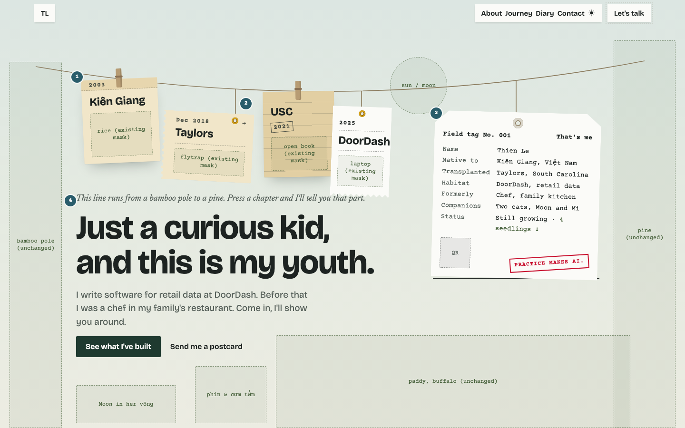
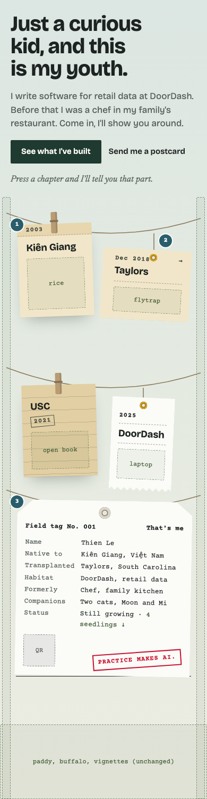
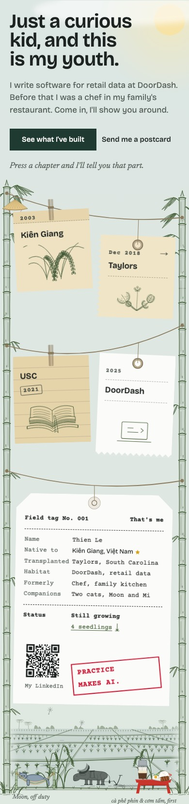
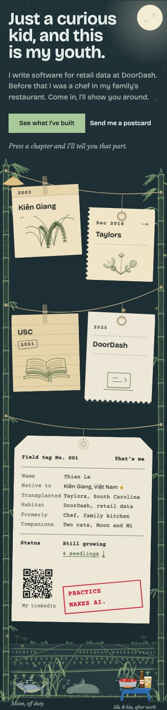
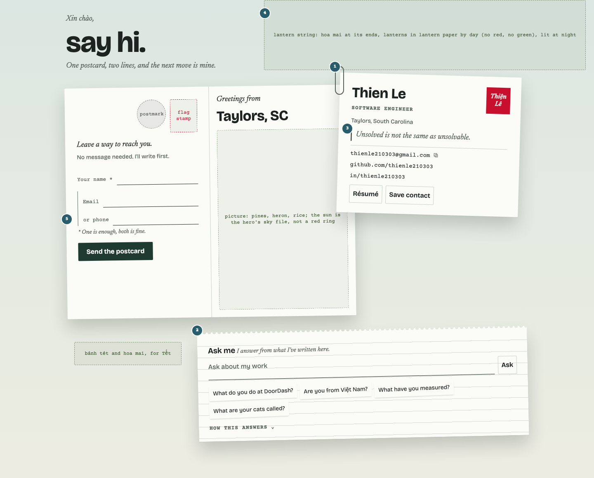
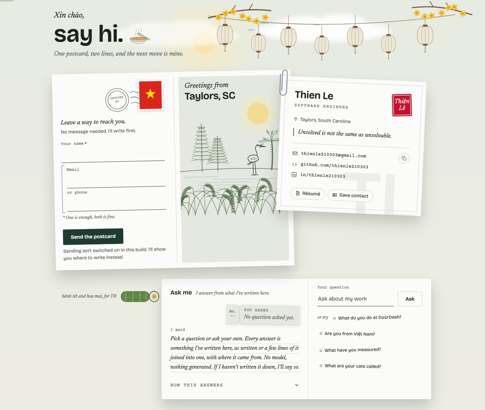
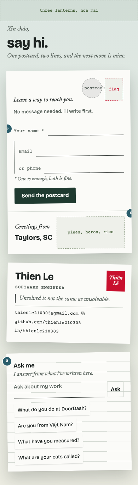
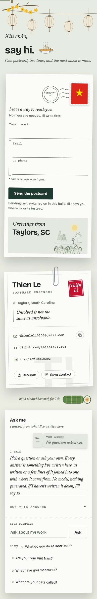
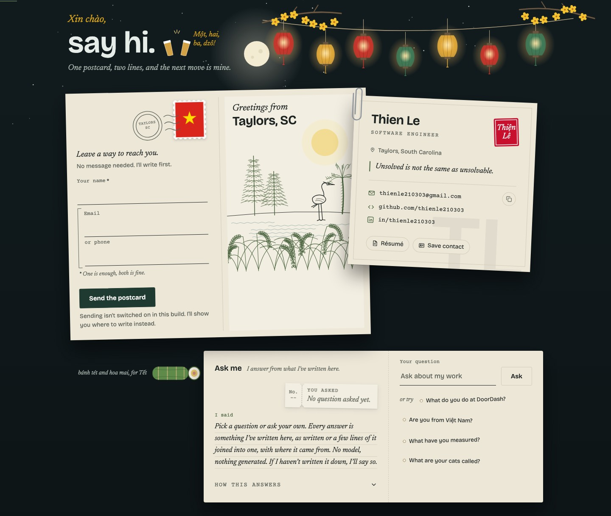

Finishing, as built.
v1 is the boards Thien approved. v2 redraws them where the build moved, listed below. Audit: audit.md.
- The hint reads "Press a chapter and I'll tell you that part." v1's "Press anything on the line" wrapped to two lines at 1440.
- From 1280 the Ask lies across the foot of the postcard and the card, with the bánh tét beside it. Under the card (v1), its words stacked it about 700px tall and left the postcard's foot bare. It lies flat, because a tilt changed its measured height.
- The email and phone labels stay above their lines. Labels on the line shortened the lines below the form's full width, which round 25's rule forbids. Only the gaps are tighter.
- The receipt is shorter and on a 12px string from 1024. At its board height it pushed Moon's hammock off a 1440×900 first screen.
- The paper clip grips the card's left edge over the postcard, not the middle of the card.
A · The hero





B · Contact




